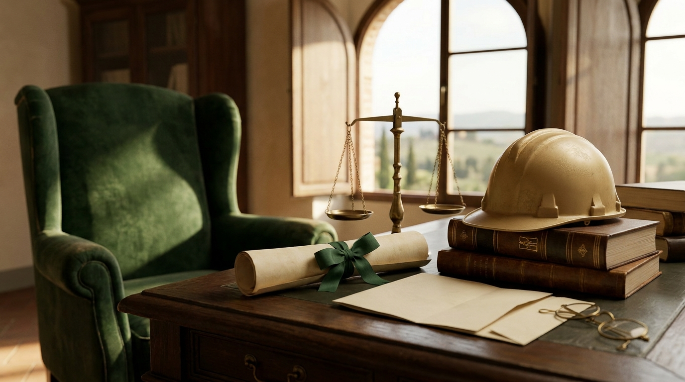

Infortuni sul lavoro: la responsabilità del datore solo formale
La Corte di Cassazione torna sul confine tra datore formale e gestore effettivo. Anche chi riveste solo sulla carta la qualifica datoriale, senza esercitare poteri decisionali concreti, risponde penalmente degli infortuni sul lavoro. Una posizione che amplia la tutela del lavoratore e impone alle imprese una riflessione seria sulle deleghe e sulle responsabilità nominali.

Il caso e il principio affermato
La questione è classica nella prassi delle imprese: chi risponde quando il soggetto formalmente investito della qualifica di datore di lavoro non è quello che, di fatto, gestisce l'azienda e organizza il lavoro?
La Cassazione ha ribadito che la titolarità formale della posizione datoriale non è uno schermo neutro. Chi accetta di figurare come datore di lavoro assume su di sé gli obblighi di sicurezza, anche quando i poteri decisionali siano esercitati da un altro soggetto, il cosiddetto gestore effettivo.
In altre parole: la responsabilità penale per gli infortuni non si trasferisce automaticamente a chi comanda nei fatti. Resta in capo anche a chi ha prestato il proprio nome.
Inquadramento normativo
Il riferimento è il D.lgs. 9 aprile 2008, n. 81 (il Testo Unico sulla sicurezza sul lavoro).
L'articolo 2 definisce il datore di lavoro come il soggetto titolare del rapporto di lavoro o, comunque, colui che ha la responsabilità dell'organizzazione dell'attività e l'esercizio dei poteri decisionali e di spesa. La norma, dunque, individua due profili: quello formale (la titolarità del rapporto) e quello sostanziale (l'esercizio effettivo dei poteri).
L'articolo 299 introduce il principio di effettività: gli obblighi di sicurezza gravano anche su chi esercita di fatto i poteri datoriali, pur essendone privo di investitura formale. Questa disposizione, però, non funziona come una valvola di sfogo. Non serve a liberare il datore formale, ma ad aggiungere un soggetto responsabile.
Il risultato è una responsabilità che può coesistere: il gestore effettivo risponde perché comanda; il datore formale risponde perché ha accettato la qualifica e i doveri che ne derivano.
Implicazioni pratiche
La pronuncia incide su una pratica diffusa: l'attribuzione "di facciata" della carica datoriale a un soggetto compiacente, mentre la gestione reale resta in altre mani.
Chi accetta di figurare come datore di lavoro — amministratori prestanome, soci che firmano senza decidere, familiari coinvolti solo sulla carta — non è un semplice nome su un documento. È un soggetto penalmente esposto in caso di infortunio.
Per le imprese strutturate, il tema riguarda soprattutto la coerenza tra organigramma dichiarato e poteri effettivamente esercitati. Una struttura formale disallineata dalla realtà operativa non protegge nessuno: moltiplica le posizioni di garanzia, non le riduce.
La delega di funzioni in materia di sicurezza, prevista dall'articolo 16 del medesimo decreto, resta lo strumento corretto per ripartire le responsabilità. Ma deve essere reale, scritta, con autonomia di spesa e poteri effettivi. Una delega vuota non sposta nulla.
Cosa fare in concreto
- Verificate l'allineamento tra ruoli formali e poteri reali. Chi risulta datore di lavoro deve esercitare davvero i poteri organizzativi e di spesa, oppure aver delegato in modo valido.
- Non accettate cariche datoriali "di cortesia". Figurare come datore senza gestire significa assumere responsabilità penali senza controllo sui rischi.
- Formalizzate le deleghe di funzioni secondo l'art. 16 del D.lgs. 81/2008. Atto scritto, data certa, autonomia di spesa, accettazione del delegato.
- Mappate le posizioni di garanzia in azienda. Individuate chi risponde di cosa, evitando sovrapposizioni o vuoti di responsabilità.
- Sottoponete a revisione periodica l'assetto organizzativo della sicurezza, soprattutto dopo riorganizzazioni societarie o cambi al vertice.
La lezione di fondo è semplice. In materia di sicurezza sul lavoro la sostanza prevale, ma la forma non si cancella. Il datore formale non è un guscio vuoto: è una posizione di garanzia a tutti gli effetti.
Consigliamo di trattare ogni attribuzione di carica datoriale come un'assunzione effettiva di responsabilità, e non come un adempimento burocratico.
---
*Contributo informativo a cura di Tamburro & Partners - Avv. Giuseppe Tamburro. Non costituisce parere legale.*
Ogni storia di lavoro ha i suoi tempi.
Se gestisci HR e vuoi un confronto su contenzioso, ispezioni o licenziamenti, scrivi allo studio. Ti rispondiamo entro un giorno lavorativo.